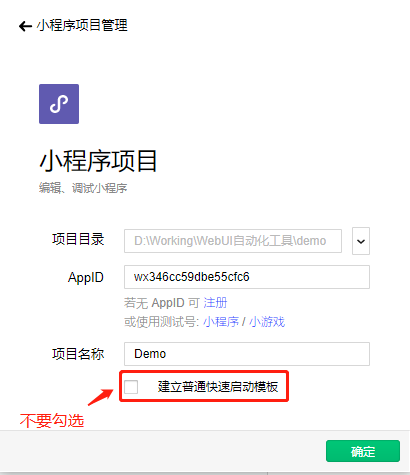
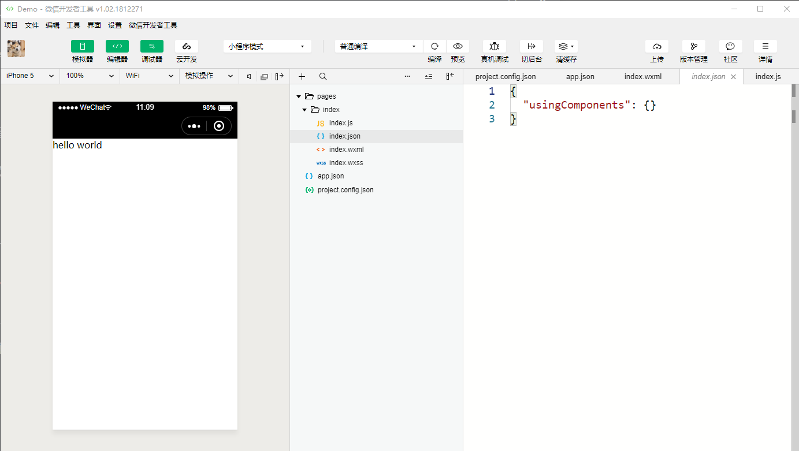

每次学习新的一门语言和技术，都以写hello world开始。现在学习开发小程序，也以hello world开始。
首先要下载微信开发者工具：
https://mp.weixin.qq.com/debug/wxadoc/dev/devtools/download.html
1、创建项目

首先选择项目目录，若还没有注册AppID，可以选择使用测试号的ID，然后填写项目名称，最后取消勾选“建立普通快速启动模板”的选项，不使用模板，自己来添加代码。
2、添加Hello world代码
在根目录下创建app.json，其内容如下。
1 | { |
在根目录下新建pages目录，然后在pages目录下新建index目录，接着在index目录下创建两个文件index.wxml和index.js。
index.wxml的内容：<text>Hello World</text>
index.js的内容：Page({})
3、编译项目
点击编译，默认使用普通编译。
编译后会生成多两个文件，index.json 和 index.wxss.
index.json的内容：
1 | { |
index.wxss的内容(只有一行注释)：/* pages/index/index.wxss */
最后内容显示了hello world

总结
小程序的主要开发语言是 JavaScript 。小程序的开发渲染线程和脚本线程是分别运行在不同的线程中，逻辑层和渲染层是分开的，逻辑层运行在 JSCore 中，并没有一个完整浏览器对象，所以前端的一些库，比如JQuery在小程序中是无法运行的。
小程序开发过程中需要面对的是两大操作系统 iOS 和 Android 的微信客户端，以及用于辅助开发的小程序开发者工具。
小程序的运行环境：
| 运行环境 | 逻辑层 | 渲染层 |
|---|---|---|
| iOS | JavaScriptCore | WKWebView |
| 安卓 | X5 JSCore | X5浏览器 |
| 小程序开发者工具 | NWJS | Chrome WebView |